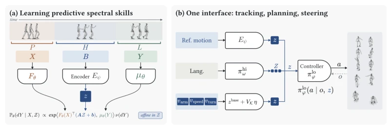
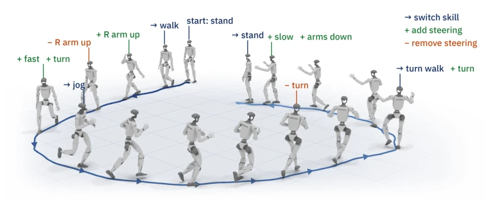
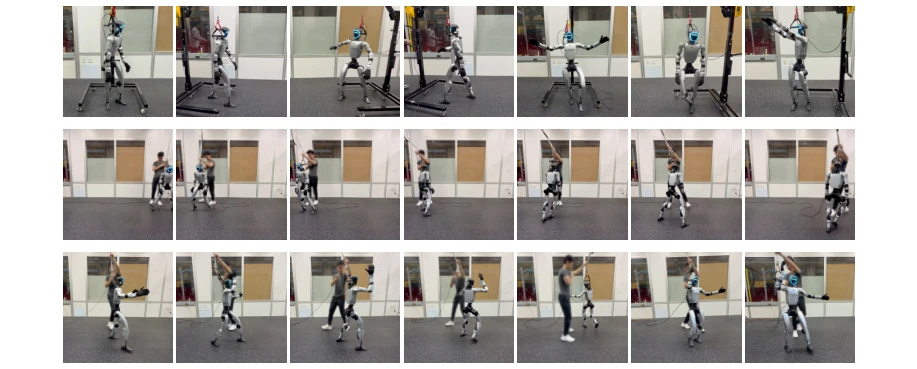
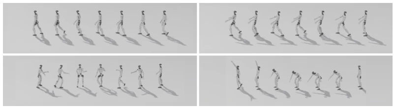
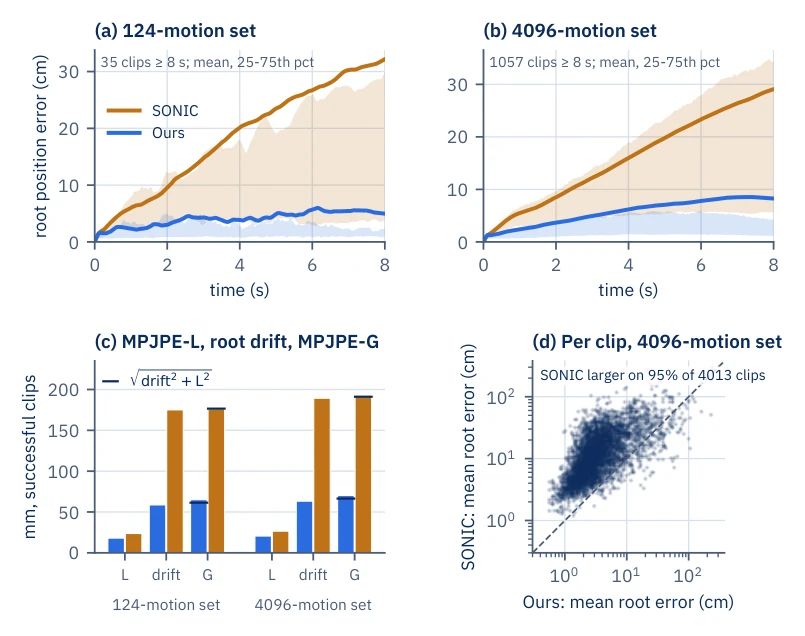
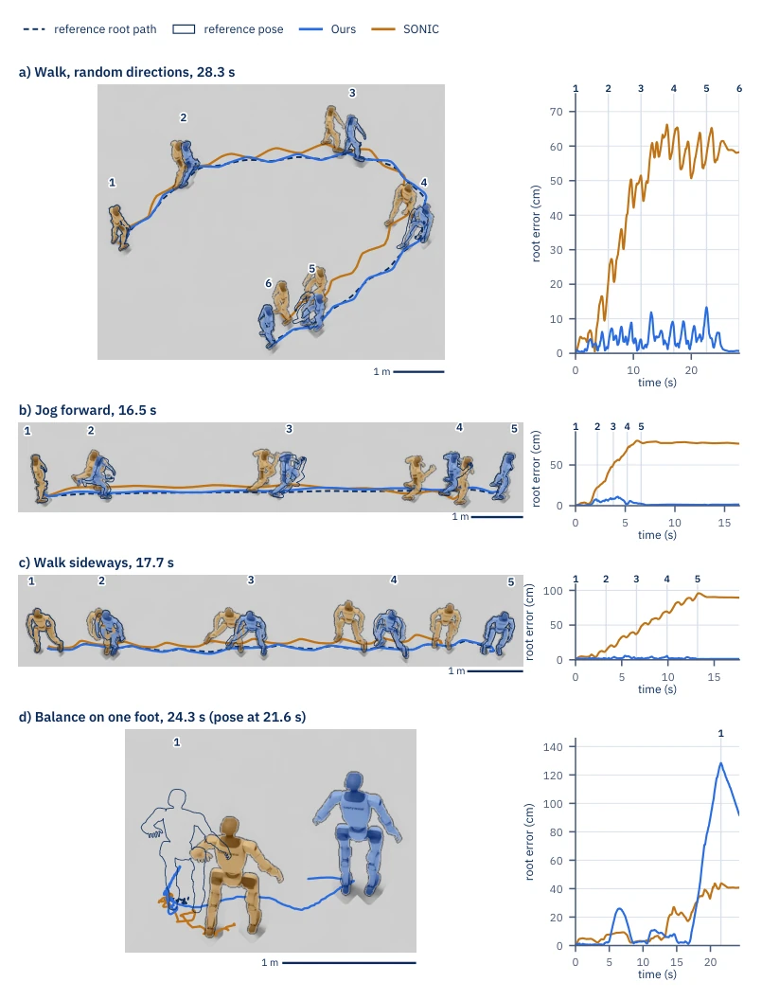
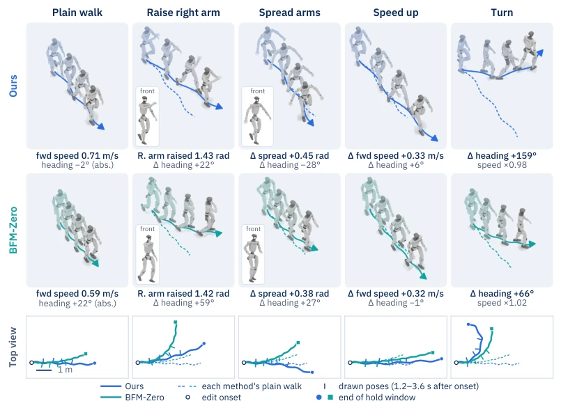
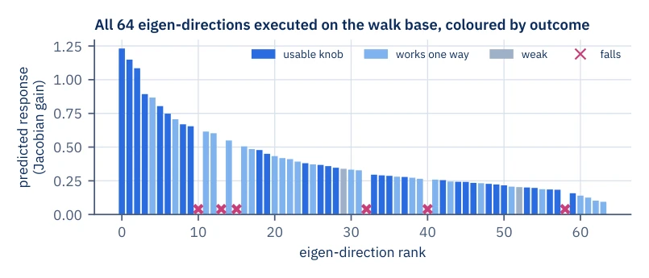
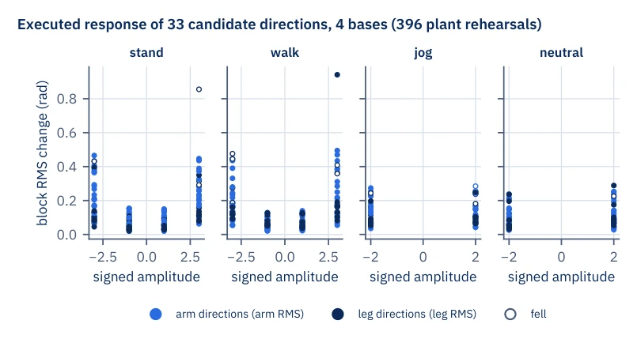

This paper teaches a lesson to the embodied AI community: do not always think about having high-dimensional planners guess joint trajectories, that is asking for trouble. The "Spectral Skills" created by the authors is indeed substantial, changing motion representation from "reconstructing the past" to "predicting the future", this idea is much more rational than models that only do autoencoders. The most impressive maneuver is the "Spectral Directions" combination, allowing the robot to wave while walking and spin in place without retraining, such zero-shot composition capability in whole-body control is simply a dimensional reduction strike. However, this trick is not omnipotent, it highly depends on the coverage of offline data; if the training set lacks the "gene" of a certain action, Spectral Directions cannot produce variations. Moreover, although the paper boasts a 62% error reduction, that is compared to SONIC; if compared to expert policies fine-tuned for specific tasks, it may not have an advantage. Overall, this is a good method that plays "prediction" to the fullest, but do not expect it to solve all long-tail problems.
研究动机Motivation
层级化人形机器人控制的核心痛点在于高层规划器与底层控制器之间的“接口”设计。现有的显式接口（如关节轨迹、笛卡尔坐标）让规划器直接暴露于复杂的动力学细节中，导致长时程预测极难收敛，且容易将规划误差累积给底层（Kaelbling & Lozano-Pérez, 2011; Kuindersma et al., 2016）。虽然引入潜在接口（Latent Interface）能缓解此问题，但现有方法多基于运动重建（Reconstruction）或后验推断（Liang et al., 2025; Peng et al., 2022; Luo et al., 2026）。这种“重建过去”的范式存在致命缺陷：它无法保证潜在变量包含预测未来的关键信息，导致规划器难以可靠预测，且底层控制器难以精准执行。更糟糕的是，现有潜在空间通常是非线性的，缺乏可解释性和组合性，无法像人类一样将“走路”和“挥手”简单叠加生成新行为（Tirinzoni et al., 2025; Li et al., 2026）。因此，亟需一种既能被高层准确预测，又能被底层精准执行，且支持线性组合新行为的潜在接口。
The core pain point of hierarchical humanoid robot control lies in the design of the "interface" between high-level planners and low-level controllers. Existing explicit interfaces (such as joint trajectories, Cartesian coordinates) expose planners directly to complex dynamic details, making long-horizon prediction extremely difficult to converge, and easily accumulating planning errors to the bottom layer (Kaelbling & Lozano-Pérez, 2011; Kuindersma et al., 2016). Although introducing latent interfaces can alleviate this problem, existing methods are mostly based on motion reconstruction (Reconstruction) or posterior inference (Liang et al., 2025; Peng et al., 2022; Luo et al., 2026). This "reconstructing the past" paradigm has fatal flaws: it cannot guarantee that latent variables contain key information for predicting the future, making it difficult for planners to predict reliably and for low-level controllers to execute precisely. Worse still, existing latent spaces are usually nonlinear, lacking interpretability and composability, unable to simply superimpose "walking" and "waving" like humans to generate new behaviors (Tirinzoni et al., 2025; Li et al., 2026). Therefore, there is an urgent need for a latent interface that can be accurately predicted by the high-level, precisely executed by the low-level, and supports linear combination of new behaviors.
This paper proposes the "Spectral Skills" framework, the core of which is learning latent representations by predicting future motion. The overall process is divided into offline training and online execution phases. First, use offline motion capture data to build a dataset, dividing motion clips into Context, Command, and Future. The encoder maps the Command segment to a low-dimensional latent skill vector z, the decoder uses Context and z to predict future motion, rather than reconstructing the Command segment. The key innovation is that the decoder adopts an energy form based on diffusion models, and skill z enters the prediction model only through affine transformation (Az+b). This linear design ensures the skill's response to motion prediction is linear. Second, by calculating the covariance matrix of the response Jacobian matrix (Response Gram Matrix), extract eigenvectors as "Spectral Directions". These directions correspond to semantically independent changing attributes in motion space (such as lifting arms, turning). Finally, in the online phase, the high-level planner predicts skill sequences, the low-level controller executes; if new skills need to be combined, simply superimpose spectral direction vectors on the base skill vector (z_steered = z_base + V_K * \eta), generating unseen action combinations without retraining the controller.

Figure 2: Overview. (a) An encoder Eψ maps a state history to a skill z that linearly parameterizes a low-rank transition model. (b) One controller πlo θ takes this skill from reference tracking, language- conditioned planning, or skill composition.
Experiments were conducted on a 29-DoF Unitree G1 humanoid robot, including simulation (Isaac Lab) and real-robot deployment. The dataset adopts 129,785 action clips from BONES-SEED. Baselines include SONIC, Any2Track, and BeyondMimic. Evaluation metrics are global/local MPJPE and Success Rate (SR). Results show that on 124 capability sets and 4096 action sets, the method's global tracking error is reduced by 62% compared to SONIC, and training steps are only 1/12 of SONIC's. In skill combination experiments, by superimposing spectral directions, successfully generated combinations not appearing in the training set such as "walking while waving", "walking while turning", and real-robot deployment was smooth. Language planning experiments show that the planner based on spectral skills success rate (91.1%) is significantly better than explicit trajectory planning (52.5%). Ablation studies confirm that the predictive training objective (rather than reconstruction) is the key to performance improvement.

Figure 1: Skill chaining and composition with one controller. One frozen controller chains skills and adds or removes steering, executing a loop in physics simulation.

Figure 3: Real-robot deployment of the frozen controller on a Unitree G1. Top: tracking diverse whole-body motions. Middle: skill chaining, a side step, a 180◦turn and another side step, by switching skill codes. Bottom: knobs composed on one base skill. From left to right: base; right arm up; right arm up with increasing left turns (three panels) and increasing right turns (two panels) with each instance being a separate trajectory.

Figure 6: Language-conditioned rollouts. The planner produces skills that the low-level policy executes: walking in a circle, lifting and carrying a box, opening a door while turning, and reaching from low to high.

Figure 7: Global root tracking, ours vs. SONIC. (a, b) Root position error over the first 8 s of jointly completed clips lasting at least 8 s: mean (line) and interquartile range (band). In (a), a few SONIC clips that drift by over a meter lift its mean above the upper quartile. (c) MPJPE-L, root drift and MPJPE-G over successful clips. The tick marks p

Figure 8: Four long clips from the 4096 set, seen from above. Left: rollouts, one fixed camera per clip. Root paths: reference dashed, ours blue, SONIC orange. Robots are drawn at the numbered times, ours and SONIC shaded, the reference as an outline. The scale bar is 1 m at the depth of the nearest path point. Right: root position error, with the pose times marked. In (b) and (c) the poses span the part of the clip in which the reference moves; (d) shows one pose, at the time of our largest error.

Figure 9: A walk under our steering (top row) and under BFM-Zero’s reward prompts (middle row). Tiles show poses 1.2–3.6 s after onset. The bottom row shows ground paths from above (left turns bend upward). Numbers are changes against the same method’s plain walk over its hold window (ours 0.5–5.9 s, BFM-Zero 1.0–6.0 s after onset); plain-walk tiles instead give that walk’s own forward speed and heading change. Spread is the mean outward shoulder-roll change of both arms, and “speed ×” is the ratio of mean ground-path speeds. The “front” insets show the newest pose from the robot’s front right.

Figure 10: All 64 spectral directions (eigenvectors of the response Gram) executed in both signs on the walk base. Bars give the predicted gain by rank, colored by outcome. Crosses mark directions that fall in both signs.

Figure 12: RMS change of the targeted arm (blue) or leg (navy) joints against signed amplitude. “Stand” is a standing typing idle and “neutral” a neutral standing idle. Open circles are falls.